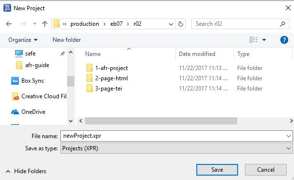

Create a New XML Project
Using Oxygen to organize files.
Oxygen XML Editor organizes groups of
files into a single "project," to make it easier to work with the group and track
relationships between group member files. Be careful not to confuse Oxygen XML
projects with AFR OCR projects. While both are called "projects," they are
fundamentally different animals. To avoid confusion, this guide consistently uses either
"OCR project" or "XML project," unless the distinction is obvious from the context.
- In Oxygen, select and navigate to the parent folder of the HTML files you want to convert (i.e. eb11/r01).
- Create a new Project in that directory ().
Figure: File folder structure
